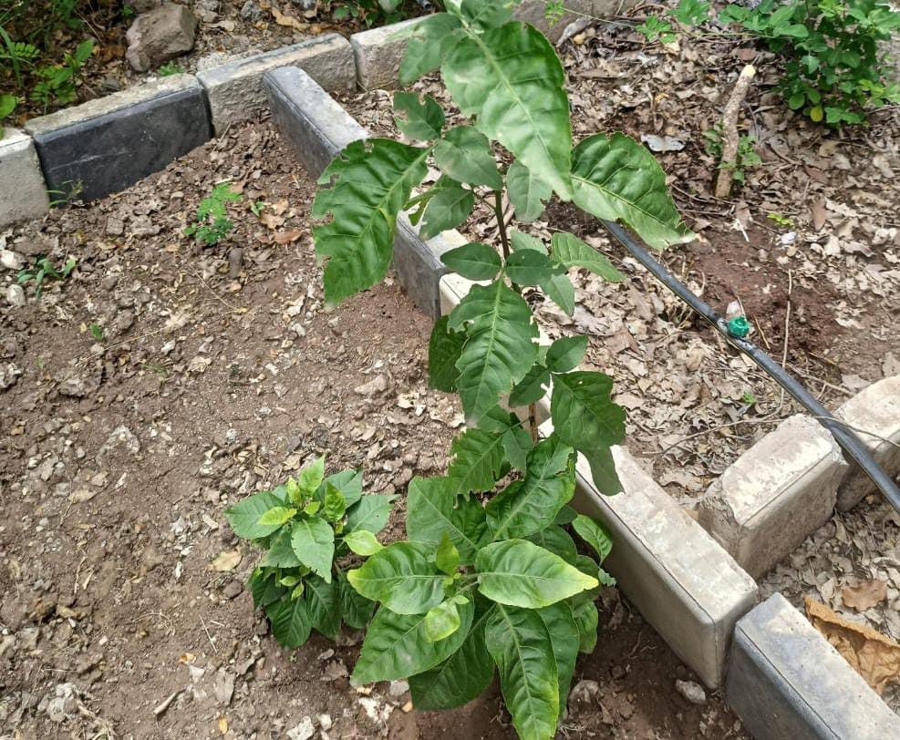

Plant Information
Botanical Name:
Aegle marmelos (L.) Corrêa
Common Name:
Bael / Bengal quince
Family:
Rutaceae
Description
A small to medium-sized tree with trifoliate leaves
and hard, round fruits.
Medicinal Uses
-
Traditionally used for digestive problems and
to support gut health.
-
Helps in managing diarrhoea and dysentery.
-
Traditionally used for digestive weakness.